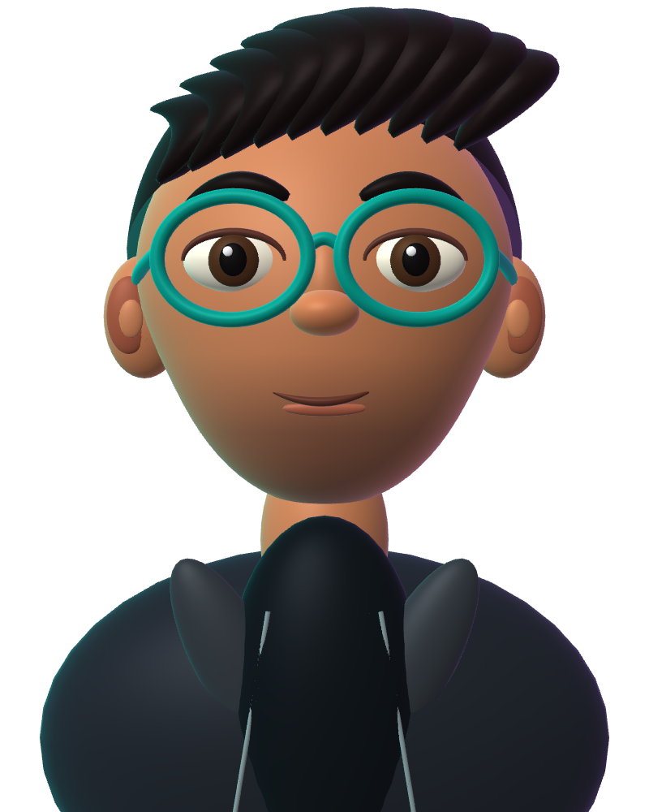

Ember
A slow reveal built around amber light, glass edges and the heft of the bottle.

A fragrance film, a virtual eyewear editorial and a beverage launch still.
A slow reveal built around amber light, glass edges and the heft of the bottle.
A chrome frame, an electric blue set and one virtual model give the collection a distinct face.
Cut fruit and a saturated orange palette put flavour at the centre of a launch post.
Concept, storyboard and a finished short film, with vertical edits and opening hooks for social.
AI model direction, styling and campaign imagery for fashion, beauty and lifestyle brands.
Audience positioning, content pillars and a posting plan, with creative tests guided by watch time, saves and enquiries.
I work where filmmaking meets social strategy. For a product launch, I start with what a viewer should notice in the first frame. That choice shapes the model, the light, the edit and the cutdowns a brand can test across its channels.
View my LinkedIn profileSend me your product, launch date and the audience you want to reach.